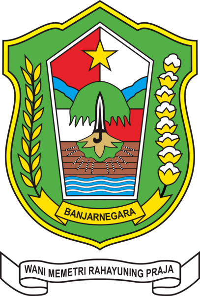
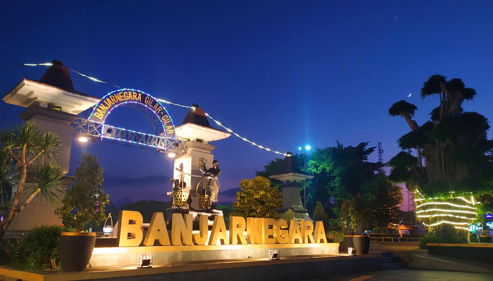
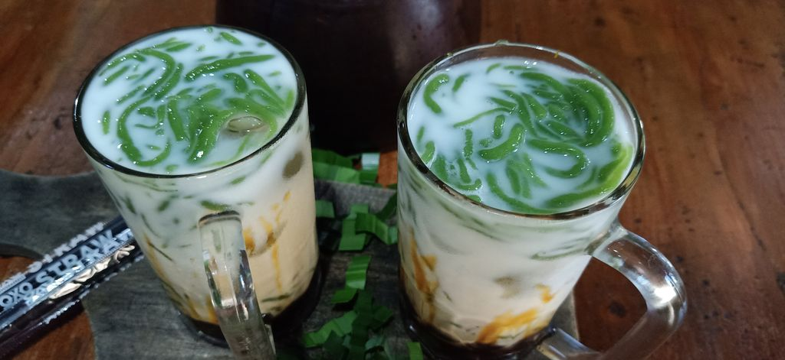
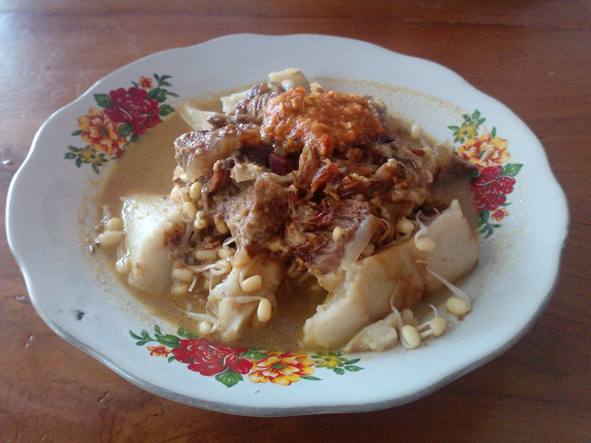
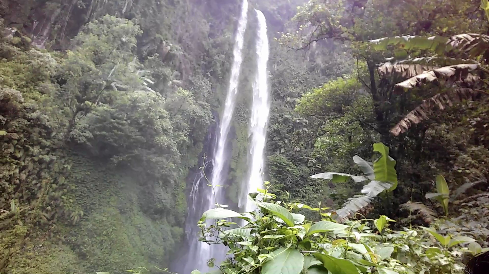

Banjarnegara (bahasa Jawa: ꦧꦚ꧀ꦗꦂꦤꦼꦒꦫ) adalah sebuah kabupaten di Provinsi Jawa Tengah, Indonesia. Ibu kota kabupatennya juga bernama Banjarnegara. Kabupaten Banjarnegara terletak di antara 7° 12'–7° 31' Lintang Selatan dan 109° 29'–109° 45'50" Bujur Timur. Luas Wilayah Kabupaten Banjarnegara adalah 106.970,997 ha atau 3,10 % dari luas seluruh Wilayah Provinsi Jawa Tengah. Kabupaten ini berbatasan dengan Kabupaten Pekalongan dan Kabupaten Batang di sebelah utara, Kabupaten Wonosobo di sisi timur, Kabupaten Kebumen di sisi selatan, serta Kabupaten Banyumas dan Kabupaten Purbalingga di sebelah barat.

7o12' – 7o20' - 109o31' Lintang Selatan dan 109o45' Bujur Timur
Sejarah

Banjarnegara sebagai kabupaten dimulai pada tanggal 26 Februari 1571. Tanggal tersebut bertepatan dengan pembagian wilayah Wirasaba menjadi empat oleh Joko Kaiman. Saat itu, wilayah Wirasaba dipimpin olehh Adipati Wirasaba VI yang hidup sezaman dengan Kesultanan Pajang. Suatu saat, terjadi kesalahpahaman antara Adipati Wirasaba dengan Sultan Hadiwijaya dari Pajang. Masalah tersebut berakhir dengan terbunuhnya Adipati Wirasaba. Setelah itu, Sultan Hadiwijaya yang sadar tindakannya salah lantas memanggil ahli waris Adipati Wirasaba. Awalnya anak keturunan mendiang Adipati tidak ada yang berani menghadap karena khawatir akan dieksekusi. Kemudian, salah seorang menantu adipati yang bernama Raden Joko Kaiman pun memberanikan diri ke Pajang. Sesampainya di Pajang, Joko Kaiman justru diangkat menjadi penguasa baru di wilayah Wirasaba, dengan gelar Adipati Warga Utama II atau Adipati Wirasaba ke-7.
Kuliner
Dawet Ayu

Dawet Ayu adalah minuman paling legendaris khas Kota Banjarnegara. Mulai dari kampung hingga kota, minuman yang segar ini mudah sekali dijumpai. Di pasar-pasar tradisional selalu ada pedagang yang menjajakan dawet ayu. Bahkan, kamu bisa dengan mudah mendapatkan sajian ini di daerah luar Kota Banjarnegara.
Paling nikmat dawet ayu diminum saat cuaca terik. Minuman ini memiliki ciri khas gula yang pekat dan santan yang kental. Untuk gula terbuat dari gula jawa atau gula aren. Untuk menambah aroma wangi, gula dawet ayu biasanya dicampur dengan nangka atau durian. Segarnya terasa sempurna jika disajikan dalam keadaan dingin.
Soto Krandengan

Dawet Ayu adalah minuman paling legendaris khas Kota Banjarnegara. Mulai dari kampung hingga kota, minuman yang segar ini mudah sekali dijumpai. Di pasar-pasar tradisional selalu ada pedagang yang menjajakan dawet ayu. Bahkan, kamu bisa dengan mudah mendapatkan sajian ini di daerah luar Kota Banjarnegara.
Paling nikmat dawet ayu diminum saat cuaca terik. Minuman ini memiliki ciri khas gula yang pekat dan santan yang kental. Untuk gula terbuat dari gula jawa atau gula aren. Untuk menambah aroma wangi, gula dawet ayu biasanya dicampur dengan nangka atau durian. Segarnya terasa sempurna jika disajikan dalam keadaan dingin.
Wisata
Curug Pitu

Curug Pitu atau Air Terjun Curug 7 merupakan salah satu alternatif pilihan yang bisa Anda kunjungi untuk wisata bersama keluarga di daerah Banjarnegara Jawa Tengah. Menikmati liburan bersama keluarga merupakan momen yang sangat dinantikan. Curug Pitu ini berada di Desa Kemiri, Kecamatan Sigaluh, Kabupaten Banjaranegara, Jawa Tengah.
Wisata Curug Pitu Banjarnegara Jawa Tengah merupakan tempat wisata yang harus anda kunjungi karena pesona keindahannya tidak ada duanya. Penduduk lokal daerah Wisata Curug Pitu Banjarnegara Jawa Tengah juga sangat ramah tamah terhadap anda. Yang unik dari air terjun Curug Pitu adalah sesuai dengan namanya, Curug ini mempunyai tujuh tingkatan air terjun dari atas ke bawah. Untuk mencapai keseluruhan tingkatan pengunjung harus berjalan kaki ke arah hulu ( ke atas) melewati jalan setapak sempit.
Candi Arjuna
Candi Arjuna merupakan salah satu bangunan candi di Kompleks Percandian Arjuna, Dieng. Candi Arjuna diperkirakan sebagai candi tertua, candi ini diperkirakan dibangun pada abad 8 Masehi oleh Dinasti Sanjaya dari Mataram Kuno. Di kompleks ini juga terdapat Candi Semar, Candi Srikandi, Candi Puntadewa, dan Candi Sembadra. Candi Arjuna terletak paling utara dari deretan percandian di kompleks tersebut. Sementara itu, Candi Semar adalah candi perwara atau pelengkap dari Candi Arjuna. Kedua bangunan candi ini saling berhadapan.
Seperti umumnya candi-candi di Dieng, masyarakat memberikan nama tokoh pewayangan Mahabarata sebagai nama candi.